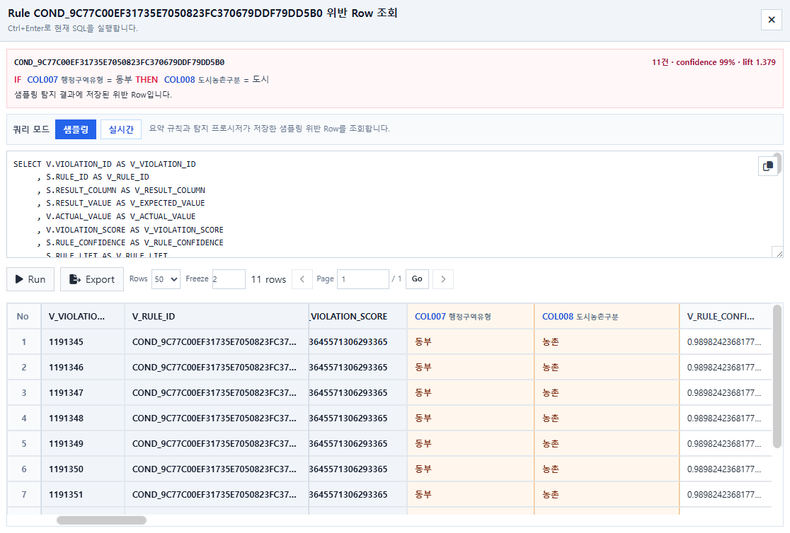
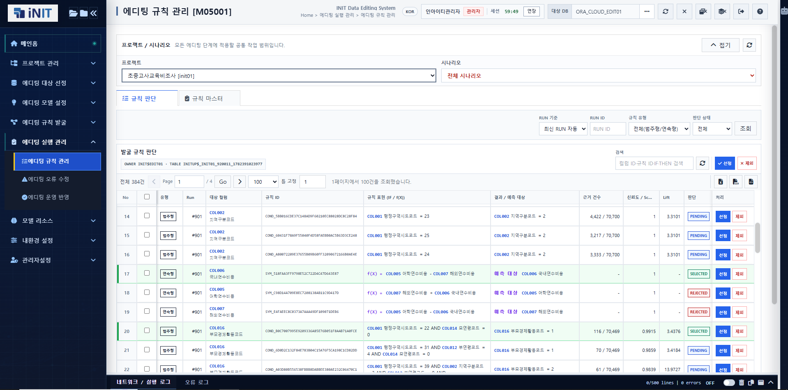
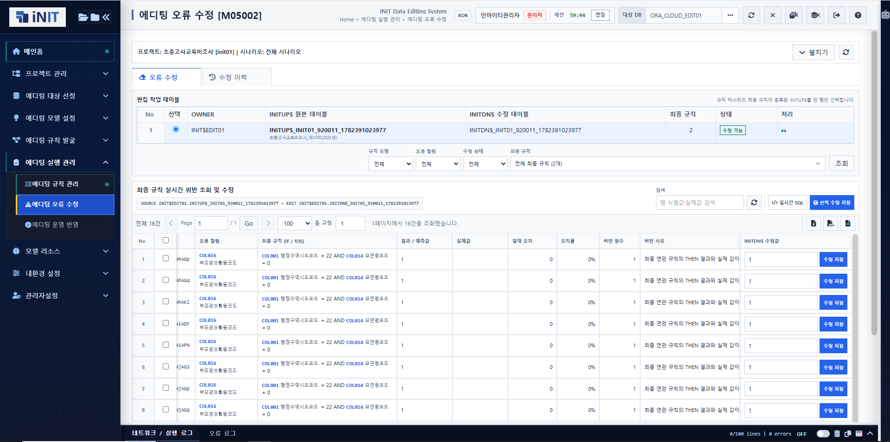
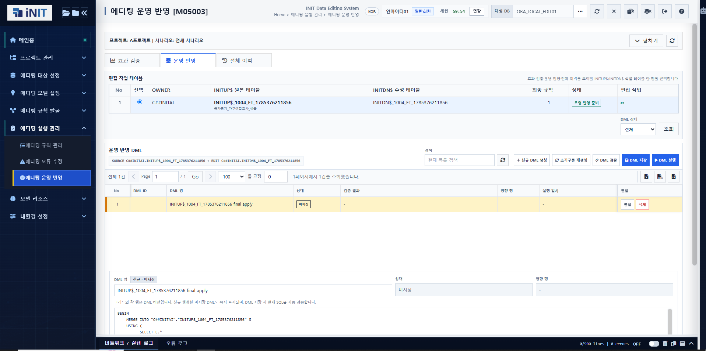

공공·행정
국가통계·행정자료의 품질 검증
기관별 자료의 결측·범주·수치 관계를 점검하고, 통계 생산 과정의 규칙과 보정 근거를 실행 이력으로 관리합니다.
사업분야 자세히 보기SOLUTION IN CONTEXT
인에디타원의 규칙 발굴·위반 탐지·검토 이력을 고객의 품질 관리 업무에 연결합니다. 자동 발굴 결과는 후보로 제시하며, 업무별 적용 기준과 최종 반영은 담당자가 검토합니다.
공공·행정
기관별 자료의 결측·범주·수치 관계를 점검하고, 통계 생산 과정의 규칙과 보정 근거를 실행 이력으로 관리합니다.
사업분야 자세히 보기금융·핀테크
금융 통계와 계약·거래 데이터의 항목 간 관계를 검토합니다. 분석·리스크 모델에 사용할 데이터의 위반 근거와 수정 이력을 추적합니다.
사업분야 자세히 보기R&D·정책
조사·연구 데이터의 품질 규칙과 예외를 검토하고, 입력 자료와 실행 조건을 함께 남겨 후속 연구의 검증 근거로 활용합니다.
사업분야 자세히 보기데이터의 다차원적 구조와 유기적 상관관계를 정밀 분석하여, 최적의 데이터 품질 검증 규칙 후보를 자동으로 도출합니다.
현업 담당자가 오류 데이터의 명확한 위반 근거와 유효성을 직관적으로 확인하고, 최종 품질 규칙을 검증 및 확정합니다.
데이터의 초기 입력부터 정제 결과, 운영 환경 반영까지의 모든 변경 사항을 단일 실행 단위별로 투명하게 추적·관리합니다.
통합 데이터 오퍼레이션
단계별 데이터 입출력이 유기적으로 연계되고, 모든 실행 조건과 결과 데이터가 이력 파이프라인으로 영구 보존됩니다. 과거의 검증 프로세스를 완벽히 기억하고 재현하는 데이터 추적성을 통해, 품질 검증 업무의 일관성과 업무 생산성을 동시에 극대화합니다.
듀얼 데이터 프로파일링
여러 조건이 함께 나타날 때 기대되는 결과 범주를 IF–THEN으로 표현합니다. 지지도·신뢰도·향상도와 예외 행을 함께 확인합니다.
수치 컬럼 사이의 관계를 A=B+C와 같은 설명 가능한 수식으로 표현합니다. 적합도·오차와 관측값 분포로 적용 가능성을 판단합니다.
인에디타원(IN-EDITAONE) 핵심 워크플로우
데이터 분석 노드(Node)를 직관적으로 매핑하고, 범주형·연속형 데이터 규칙을 자동으로 발굴한 뒤, 품질 오류가 발생한 위반 레코드(Raw Data)를 즉각 추적하는 엔드투엔드(End-to-End) 제품 흐름을 화면 단위로 실감 나게 확인하실 수 있습니다.
제품 화면은 모바일 화면 너비에 맞춰 전체 구성을 한눈에 확인할 수 있습니다.
노드의 입력과 출력을 연결해 프로파일링부터 규칙 발굴과 위반 탐지까지 같은 실행 조건으로 반복합니다.
조건 조합과 결과 범주뿐 아니라 COUNT, SUPPORT, CONFIDENCE, LIFT와 실제 예외 행을 근거로 후보를 검토합니다.
결과값을 설명하는 입력 변수와 계수, R²·RMSE와 산점도를 한 화면에서 확인합니다.

요약 지표에서 끝내지 않고 예상값과 실제값, 위반 점수와 근거 SQL을 확인해 처리 대상을 결정합니다.
품질 규칙의 자산화 프로세스
시스템이 발굴한 규칙 후보를 철저한 검증을 통해 최종 규칙(Production Rule)으로 확정하고, 탐지된 원천 데이터의 오류를 정밀 정제(Data Cleansing)합니다. 이후 신뢰성이 검증된 편집 결과 데이터만을 엄격하게 통제된 거버넌스 절차(Controlled Deployment Pipeline)에 따라 상용 운영 환경에 안전하게 반영합니다.

발굴된 범주형·연속형 규칙의 근거와 상태를 검토해 실제 편집 작업에 적용할 최종 규칙을 선택하고 관리합니다.

최종 규칙을 실행해 위반 데이터를 조회하고 실제값·예측값·위반 사유를 근거로 수정값을 검토하고 저장합니다.

편집 결과의 효과와 영향 범위를 검증하고 실행 구문과 이력을 남긴 뒤 승인된 결과만 운영 데이터에 반영합니다.
책임 중심의 거버넌스 아키텍처
인에디타원은 시스템이 도출한 자동화 결과를 검증 없이 즉각 확정하거나 원본 데이터베이스(DB)에 독단적으로 반영하지 않습니다. 반드시 실무 오너십을 가진 담당자가 데이터 품질 위반의 명확한 근거와 비즈니스 영향도를 다각도로 검토할 수 있도록 엄격한 상호 검증 단계(Gatekeeper 통제 지점)를 배치하여, 데이터 운영의 안정성과 투명성을 완벽히 보장합니다.
조건과 수식, 지표와 임계값을 함께 남겨 후보가 만들어진 이유를 확인합니다.
자동 발견 결과는 후보로 제시되며 선정·제외·확정은 담당자의 검토를 거칩니다.
입력 데이터, Flow 조건과 실행 결과를 연결해 같은 분석의 근거를 추적합니다.
제품 기능 범위 및 유의 사항
인에디타원(IN-EDITAONE)은 데이터 품질 검토 및 의사결정을 지원하는 지능형 어시스턴트 플랫폼입니다. 시스템이 자동 발굴한 결과는 검토를 위한 '추천 후보 규칙'일 뿐이며, 원본 데이터를 임의로 자동 수정하거나 손상시키지 않습니다.
IN-EDITAONE 도입 및 기술 상담
귀사가 현재 보유 중인 데이터 자산의 구조, 기존 품질 검증 규칙, 그리고 현업 담당자의 실무 오퍼레이션을 다각도로 분석합니다.
이를 바탕으로 인에디타원(IN-EDITAONE)의 최적화된 적용 범위와 비즈니스 리스크를 최소화하는 단계별 맞춤 도입 로드맵을 설계해 드립니다.
인에디타원(IN-EDITAONE) 맞춤형 도입 상담 신청하기